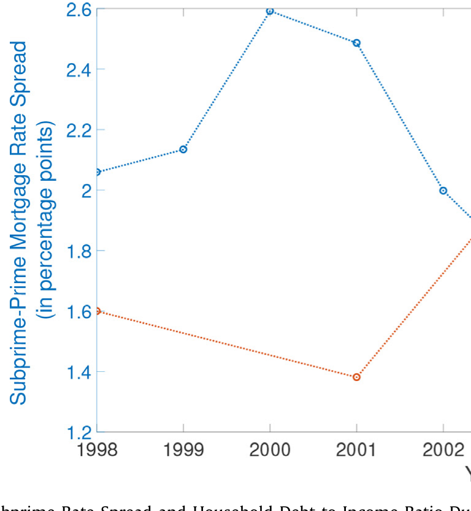
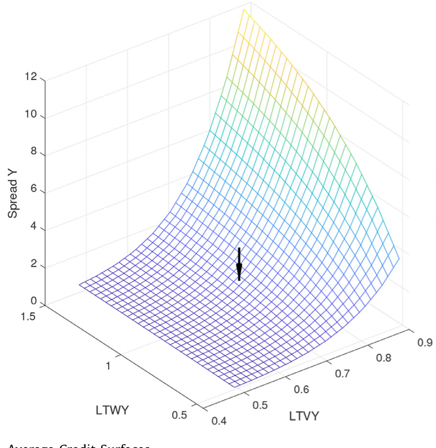
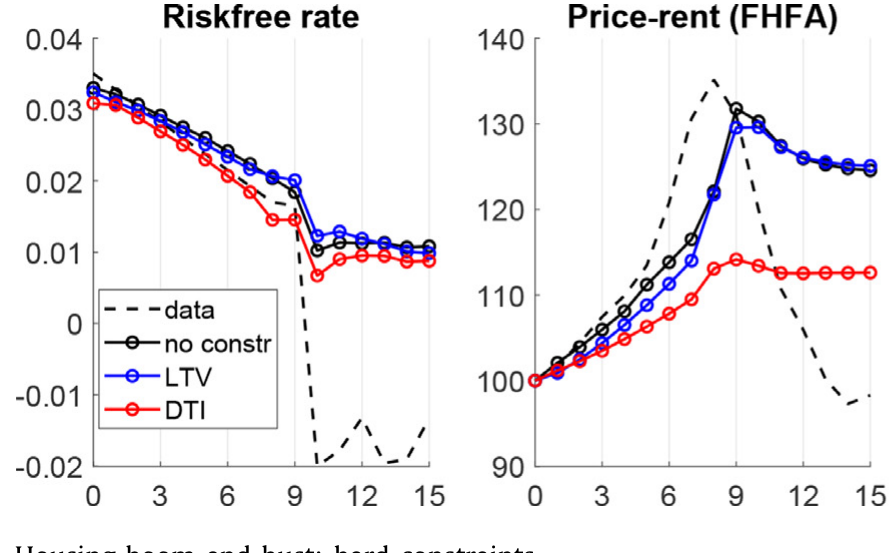
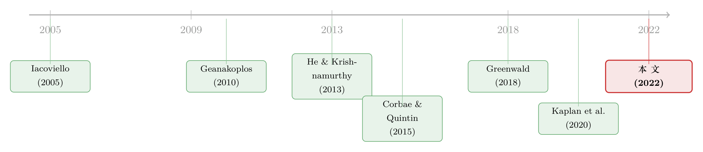

华尔街的亏损，怎样涨了你家的房贷——一张「信用曲面」的故事
本文读的是 Diamond & Landvoigt (2022, Journal of Financial Economics)：作者搭了一个一般均衡模型，把家庭的按揭杠杆当成一件「有价格的商品」——它由供给和需求共同决定，而不是被一条外生的杠杆上限「配给」出来。借贷的价格由受资本约束的金融中介定价，形成一张随中介资本而起伏的「信用曲面」。在这个框架里，一次对安全资产 (safe asset) 需求的增长，能同时压低风险借贷的价格、又抬高家庭借入的数量——单凭一个冲击，就复制出 2000 年代那场「价跌量升」的信贷繁荣，并且让随后的危机跌得更深。
1 一个被「两个冲击」掩盖的常识
先看一张图。2000 年代的美国，30 年期按揭里，次级 (subprime) 与优质 (prime) 借款人之间的利率价差，从 2000 年 2.6% 的高点一路滑到 2004 年的 1.4%；与此同时，家庭的债务收入比 (debt to income ratio) 却从 2001 年的 0.94 一路冲到 2007 年的 1.37。

Figure 1: Prime-Subprime Rate Spread and Household Debt to Income Ratio
把这两条线放在一起看，会发现一件「常识到几乎不值一提」的事：风险借贷的价格在跌，借入的数量在涨。任何一个学过供需的人都会脱口而出——这就是一条供给曲线在向外移动嘛。价格下降、数量上升，正是「信贷供给增加」的标准签名。
可偏偏，主流的量化宏观模型讲不出这个故事。原因很简单：在那一整代模型里，家庭的杠杆不是「买」来的，而是被外生地配给的——你最多只能借到房产价值的某个比例（贷款价值比，loan-to-value, LTV），或者收入的某个倍数（债务收入比，DTI）。一旦杠杆被一条硬约束钉死，它对价格就是无弹性的：利率再怎么跌，你能借的额度也不动。于是要在这类模型里同时制造出「价跌」和「量升」，就必须同时拧两个旋钮——既放松家庭这一侧的借款约束，又放松中介那一侧的供给约束。Justiniano, Primiceri & Tambalotti 早就点破过这个尴尬：你得同时冲击借款人约束和按揭供给约束，才能让高杠杆按揭的价和量一起动起来。
这就是本文要解决的张力：用一个经济上自洽的冲击，去解释那个本该「一个供给曲线外移」就能解释的现象——而不是手动拧两个外生旋钮。
接着，一个自然的问题是：如果杠杆不该被「配给」，那它该被什么决定？作者的回答朴素得近乎挑衅——像别的任何商品一样，由供给和需求决定。价格高了少借，价格低了多借。要让这句话在一般均衡里成立，你就得先回答：按揭的「价格」到底是谁、按什么定的？
2 信用曲面：把杠杆「价格」摆上台面
本文的核心装置，叫信用曲面 (credit surface)。这个概念来自 Geanakoplos (2010) 的杠杆周期、Simsek (2013) 以及 Diamond (2020) 的理论工作：金融中介并不是只给你一个「贷或不贷」的二元答案，而是递给你一张菜单——同样一栋房子，你想借得越多（杠杆越高），单位借款的利率就越贵；你的信用越差，价格也越高。把「利率」画成「杠杆 × 信用」的函数，就是一张曲面。
在模型里，年轻 (Young) 家庭、中年 (Middle-aged) 家庭都可以向中介借按揭，选择下一期要偿还的面值 \(m_t^a\)。关键在于这笔借款今天能换回多少钱——这由信用曲面 \(q^a(\alpha_t^a, Z_t)\) 决定。考虑到按揭利息的税收优惠，政府还给一笔比例补贴 \(\tau_m\)，于是家庭实际拿到手的是：
这条式子读起来不起眼，但它正是全文的枢纽，值得把每个记号拆开看。
\(q^a(\alpha_t^a, Z_t)\) 有两个自变量。第一个 \(\alpha_t^a\) 是家庭自己的资产组合（包含存款、住房、禀赋份额和按揭面值）——它决定了这笔贷款的杠杆与信用，是「曲面」上那两个维度。这一层意思是微观的：你借得越凶，沿着曲面爬得越高，价格越差。第二个 \(Z_t\) 是总量状态，里头最要命的一项就是金融中介的股本资本。这一层意思是宏观的：当中介被亏损打瘦、风险承担能力受损时，整张曲面会向上抬——对任意给定的杠杆，按揭都变贵了。
这正是「华尔街影响主街」的传导阀门。在配给型模型里，中介的死活和家庭能借多少没有直接关系——约束是外生写死的。而在这里，中介的资本通过信用曲面这一个对象，直接定价了每一个家庭的每一笔杠杆。
为什么中介资本能定价风险？这里作者接上了中介资产定价 (intermediary asset pricing) 这一脉：He & Krishnamurthy (2013)、Adrian, Etula & Muir (2014)、He, Kelly & Manela (2017) 在实证和量化上反复说明，专业中介的风险承担能力是资产价格的核心驱动；而 Gabaix, Krishnamurthy & Vigeron (2007) 和 Hanson (2014) 更直接地证明了按揭风险的定价对中介的风险承担能力高度敏感。本文的贡献，是把一个受约束中介的定价核 (pricing kernel)，和向它借钱的那些家庭的杠杆选择，第一次焊接在了一起。（关于中介资本如何给一整条期限结构定脾气，可参见《一条会「调头」的曲线：当中间商的杠杆，给股票期限结构定了脾气》。）
模型里中介这一侧也不是免费午餐：每放出一笔贷款，要付出比例为 \(\zeta>0\) 的中介成本，实际融资要花 \((1+\zeta)\,q^a(\alpha_t^a, Z_t)\,m_t^a\)。这道楔子保证了均衡里按揭确实由受约束的中介定价——而不是由风险中性的放贷人定价。这一点至关重要：如果是风险中性放贷人，按揭风险溢价会小到家庭根本懒得为它压缩杠杆，整个「价格→数量」的弹性就没了。作者特意指出，这大概也是为什么过去的文献干脆把家庭杠杆外生约束住——否则一个低风险价格会逼出一个高得离谱的杠杆。
那么模型里的「信用曲面」长什么样？下图把不同总量状态下的平均信用曲面叠在一起：横轴是杠杆，纵轴是按揭利率（相对无风险利率的价差），曲面整体随杠杆抬升而上翘，并且随中介资本恶化而整体上移。

Figure 2: Average Credit Surfaces
3 三类人、一个状态变量
要让信用曲面在一般均衡里转起来，得先把经济里的人安排好。模型有三代家庭，外加一个代表性金融中介：
- 年轻人 (Young)：预期未来收入会快速增长，所以今天想借钱消费、想加杠杆。他们必须以住房为抵押，且只能向中介借。于是年轻人的消费对信贷供给极其敏感，天然选择高杠杆、有风险的按揭。
- 中年人 (Middle-aged)：为退休攒钱，是经济里的储蓄方，持有中介发行的存款和股本。
- 老年人 (Old)：只活一期，消费完退场。
为了不必追踪每个家庭的精确年龄，作者用了一个老练的简化：每期家庭以概率 \(\pi^a\)「老化」进入下一代，否则原地不动。这样只要三代，就给了家庭近乎现实的生命周期。
非耐用消费品的总产出 \(Y_t\) 拆成确定性趋势 \(\bar{Y}_t\) 与周期成分 \(\tilde{Y}_t\) 的乘积，趋势按 \(g\) 增长 \(\bar{Y}_t = \bar{Y}_{t-1}\exp(g)\)，周期成分在对数上服从一个 AR(1)：
$$\log(\tilde{Y}_t) = (1-\rho_y)\,\mu_y + \rho_y \log(\tilde{Y}_{t-1}) + \varepsilon_t$$
其中 \(\varepsilon_t\) 独立同分布、均值为零。住房资本总量固定为 \(\bar{H}\)，提供的住房服务随趋势放大，\(s_t = n(h_t, \bar{Y}_t) = h_t \bar{Y}_t\)。
这里有一个让模型「可解」的关键技巧，也是本文真正的方法论创新：总财富是描述每一代行为的唯一状态变量。因为家庭的效用函数同质、选择集随财富线性缩放，一个比别人富 \(k\) 倍的家庭，会把每种资产都买 \(k\) 倍——于是每一代都能聚合成一个代表性个体。要做到这一点，作者允许家庭和同代人交易自己的禀赋收入，却不能把禀赋拿去向其他代借款。这一招接的是 Constantinides & Duffie (1996) 的传统：家庭只面临乘性的财富冲击，所以即便市场不完备，组合也随财富线性缩放。
这一步既是优雅，也是代价。它换来了一个本来会因异质性而无法求解的模型；但「禀赋只能在同代内交易、不能跨代抵押」是一个相当强的假设，它人为地切断了一些风险分担渠道——我们在评论一节会回到这里。
4 危机从哪来：一次「房价离散度」的冲击
繁荣讲完了，那危机呢？本文不靠「房价突然集体下跌」这种总量冲击，而是引入一个更精巧的东西——住房风险冲击 (housing risk shock)。
每个家庭下一期的房产价值，会被乘上一个独立同分布、均值为一的对数正态冲击 \(\omega_{t+1}\)。它的标准差在一个低值 \(\sigma_{\omega 0}\) 和一个高值 \(\sigma_{\omega 1}\) 之间，按一个二状态马尔可夫链 \(\Pi\) 切换：
$$\mathbb{E}_t[\omega_{t+1}] = 1, \qquad \sigma(\omega_{t+1}) \in \{\sigma_{\omega 0},\, \sigma_{\omega 1}\}$$
注意：均值始终是一，所以这不是一个让所有房子一起贬值的冲击；它只是让房价的横截面离散度变大。但后果一样致命：离散度一高，分布的左尾变厚，更多借款人瞬间「资不抵债」(underwater)，违约随之激增。违约的损失砸进中介的资产负债表，掏空它的股本，于是它承担风险的能力受损——信用曲面整体上抬，对所有家庭的所有杠杆都开出更高的价差，家庭被迫大幅去杠杆。
（这个「离散度→违约→信贷收缩」的链条，和《房子越「难定价」，越借不到钱》里讲的抵押品价值不确定性如何挤压按揭供给，是同一种经济直觉的两个侧面。）
这就把「繁荣」和「危机」用同一套机制串了起来：安全资产需求的增长，先把信用曲面压低、把杠杆和房价推高；而一旦繁荣把中介养得又大又满载风险，同样大小的一次住房风险冲击，砸下来的窟窿就更深——繁荣本身，正是后来那场更大萧条的种子。
5 三个反事实，与真实数据有多近
作者用模型做了三组定量反事实。
第一组：生产率衰退 vs. 住房衰退。 一次由生产率（\(\varepsilon_t\)）驱动的非金融衰退里，所有家庭的消费下跌幅度差不多，按揭市场几乎不受影响；而在一次住房危机里，按揭利差飙升、所有家庭去杠杆，而且受借贷约束的年轻人消费跌得格外惨。这说明「危机的痛」是高度不均的，痛在杠杆最高的那群人身上。
第二组：中介股本骤降 50%。 这是一个把「华尔街影响主街」看得最清楚的实验——不加任何其他冲击，只让中介股本腰斩。结果：年轻人的按揭利率上升约 3%，中年人上升约 40 个基点；而与此同时，家庭的平均贷款价值比反而从 0.57 降到了 0.5。
把这两件事并排读，会读出一个反直觉的结论：家庭的借贷成本上升了，尽管它们按揭的风险实际上变低了。 在配给型模型里这是不可能发生的——那里利率不会因为中介亏钱而对一个去了杠杆的家庭变贵。这正是信用曲面在起作用：曲面整体上移，哪怕你沿曲面往下退到更安全的位置，价格仍比从前贵。受约束的年轻人消费就这样被压低好几年，直到中介慢慢把股本补回来、重新愿意放风险按揭，其他变量才逐步回正。
第三组（主菜）：安全资产需求的增长。 这是全文的主实验。作者通过外生地提高家庭持有银行存款获得的效用，来刻画一个不断膨胀的安全资产需求——这呼应了 Bernanke (2005) 的「全球储蓄过剩」、以及 Caballero & Farhi (2018) 等人反复强调的：危机前安全资产需求的上升是一个核心的宏观特征。需求一涨，金融部门变大，既提供更多存款、也提供更多按揭信贷。
结果相当对得上数据：基线设定复制了 1998–2008 年间观察到的房价租金比约 25% 的上涨，以及约三分之二的按揭债务收入比 30% 涨幅。换句话说，光凭「安全资产需求增长→中介融资成本下降→信用曲面外移」这一条链，就能把房价那一段几乎吃满，把家庭负债那一段吃掉大半——而这是一个冲击办到的，不是手动拧两个旋钮。
作者又试了三个变体。金融放松管制的反事实大致复制了观察到的繁荣规模；再叠上对借款人信用的过度乐观信念，则会超调、冲过真实数据。这两个变体都带来一个经验上很真实的特征：次级按揭风险溢价的下降，以及年轻人借贷和消费比基线更剧烈的收缩。加入租赁市场的变体则受 Kaplan, Mitman & Violante (2020) 启发——他们指出租房市场会大幅削弱信贷供给对房价的影响。本文加进租赁市场后，安全资产需求反事实里房价租金比仍上涨约 20%。原因很妙：模型里的中年「房东」虽然不像年轻人那样受融资约束，但按揭利率一低，他们也想多借——于是当利率下降时，房子作为抵押品的价值上升，银行信贷供给的冲击就算在富有、不受约束的房东身上，照样能传到房价上。
（顺带一提，「利率长期走低如何喂大金融部门」这个主旋律，与《利率长跌二十年，如何亲手喂大了影子银行》讲的是同一时代背景下的两种机制；而安全资产本身如何被「制造」出来，可参见《无风险国债是「制造」出来的》。）
6 与「硬约束」正面对决
讲到这里，真正关键的一步，是把本文的机制和「硬约束」世界摆在一起，看它们在同一个冲击下走向何方。
作者把一条硬性的债务收入比约束直接塞进自己的模型。结果：安全资产需求的增长对家庭债务量几乎没有影响——因为家庭根本没办法对「按揭利率下降」作出反应去多借，约束把它们钉死了。

Figure 8: Housing boom and bust: hard constraints
不过作者很诚实地补了一句：如果是一个带长期按揭和债务收入比约束的模型（比如 Greenwald, 2018），情况会不一样。在那里，利率下降会让家庭在「承诺同样的未来还款流」的前提下、今天能借到的钱大幅增加——于是繁荣也能起来，量级甚至能逼近本文。所以作者把自己的机制定位为与 Greenwald (2018) 互补：他的模型强调利率波动通过「还款收入比约束」放松借贷，而本文把按揭利率内生化为杠杆和信用风险价格的函数。两者一个强调约束的放松，一个强调价格的弹性，殊途而部分同归。
值得记一笔的是，本文之前几乎只有 Corbae & Quintin (2015) 让家庭从一张菜单里选择自己按揭的杠杆——但他们的放贷人是风险中性的、约束是外生的。本文是第一篇让异质借款人面对一张由受约束中介在一般均衡里定价的杠杆菜单的量化论文。 「中介受约束地给按揭定价」这件事是命门：唯有如此，按揭风险溢价才会随信贷供给而真正波动起来。
7 文献脉络
把这条线捋一捋，会看到一段清晰的接力。
起点是 Iacoviello (2005)：把外生的住房抵押约束写进货币政策与商业周期，奠定了「约束驱动周期」的范式。沿着它，Kiyotaki, Michaelides & Nikolov (2011)、Landvoigt, Piazzesi & Schneider (2015)、Favilukis, Ludvigson & Van Nieuwerburgh (2017)、Guerrieri & Lorenzoni (2017) 把这套框架越做越精细；危机之后，Guren, Krishnamurthy & McQuade (2018)、Hedlund & Garriga (2020) 又强调高家庭负债与信贷摩擦对「萧条之深」的放大。但这一整脉的共同动作，都是手动拧紧或放松外生约束来制造繁荣与萧条。

另一条线是 Geanakoplos (2010) 的杠杆周期、Simsek (2013) 与 Diamond (2020) 的理论，把「杠杆本身是被定价、被选择出来的」这件事讲清楚。第三条线是中介资产定价：He & Krishnamurthy (2013)、Adrian, Etula & Muir (2014)、He, Kelly & Manela (2017) 证明中介风险承担能力是资产价格的核心，Gabaix, Krishnamurthy & Vigeron (2007)、Hanson (2014) 则把它落到按揭风险的定价上。还有一条安全资产线：Bernanke (2005)、Caballero & Krishnamurthy (2009)、Caballero & Farhi (2018) 把安全资产短缺与金融脆弱性联系起来。
本文 (Diamond & Landvoigt, 2022) 站在这四条线的交汇处：它把「杠杆是被定价的」「中介给风险定价」「安全资产需求驱动」拧成一股，又用「信用曲面」这一个对象把三者落地，从而给「危机起因究竟是宽松信贷、还是高房价预期」（Landvoigt, 2017; Kaplan et al., 2020）这场争论提供了一个统一的答案——一次安全资产需求的正向冲击，同时放松了信贷约束、又把经济推上房价上行的轨道。
8 评论与延伸（Q&A + 研究方向）
(a) 几个可能的疑问
Q：所谓「信用曲面」，和老套的 LTV / DTI 约束到底差在哪？
差在弹性。LTV/DTI 是一道硬墙：墙内随便走、撞到墙就停，杠杆对价格无弹性。信用曲面是一道斜坡：你可以一直往高杠杆爬，但每爬一步价格更贵，于是杠杆对价格连续可弹。更关键的是，这道斜坡的整体高度由中介资本决定——中介一亏钱，斜坡整体抬升，这是硬墙模型给不了的传导。
Q：「住房风险冲击」均值为一，凭什么能制造危机？
因为它打的是横截面离散度而非总量水平。均值不变，但方差变大，分布左尾变厚，于是更多借款人跌破「资不抵债」线、触发违约。违约损失打进中介股本，再通过信用曲面反噬所有人的杠杆。它的精巧在于：不需要假设「房价整体崩」，光是「房价变得更分散」就够引爆。
Q：单凭一个冲击就复制了繁荣，是不是说明别的解释都不必要了？
不能这么读。作者自己很克制：基线只吃满了房价、吃掉约三分之二的负债涨幅；要完全对上数据，还得叠上金融放松管制（恰好对齐）或过度乐观（会超调）。所以更稳妥的结论是——供需机制是一块之前缺失的、且足够有力的拼图，而不是唯一的拼图。
Q：50% 股本骤降让利率涨、却让 LTV 降，这不矛盾吗？
不矛盾，正是论文最漂亮的反直觉点。家庭被迫去杠杆（LTV 从
0.57到0.5），按理风险更低、该更便宜；但信用曲面整体上移盖过了这个效应，所以即便退到更安全的位置，按揭仍更贵。风险下降与成本上升同时发生——这是配给型模型结构上无法产生的。
Q：「总财富是唯一状态变量」的聚合结果，会不会把太多异质性洗掉了？
这是模型最大的方法论赌注。聚合靠的是「同质效用 + 选择集随财富线性缩放 + 只有乘性财富冲击」（Constantinides–Duffie 式）。它换来了可解性，但代价是：禀赋只能同代内交易、不能跨代抵押，这人为关掉了一些风险分担。好在作者用 Proposition 1 证明了租赁市场在均衡中不被使用，模型等价于纯自有住房——这降低了一部分担忧，但「跨代不可抵押」依旧是个强假设。
Q：长期按揭会不会改变结论？
作者承认这是软肋。现实按揭可还 30 年，模型为了可解只允许一期按揭。在带长期按揭和 DTI 约束的世界里（如 Greenwald, 2018），利率下降能让「承诺同样未来还款」的家庭今天借得更多，繁荣照样起得来。所以本文与那一脉是互补而非替代——作者也明说，未来想把长期按揭加进来做更直接的比较。
(b) 几个可能的研究问题与提案
1）把「信用曲面」搬到公司债 / 信用市场。 【经济故事】本文的核心对象是「价格随杠杆与中介资本连续变化的菜单」。公司债市场天然就有这样一张曲面：同一发行人，不同优先级 / 期限 / 契约的债，价差随杠杆与做市商资本而变。能否构造一个「公司信用曲面」，检验做市商资本冲击如何沿曲面整体抬升、压缩企业杠杆？ 【可行性】中——TRACE 成交 + Mergent FISD 契约数据可得，识别难点在于把「中介资本冲击」与「企业基本面」分开，可借交易商资产负债表约束（如一级交易商监管变化）作为外生变动。
2）外资持有人作为「安全资产需求」的外生推手。 【经济故事】本文用「提高存款效用」来外生刻画安全资产需求增长。现实中，外国官方部门（央行储备）对美国安全资产的需求是一个更干净的外生来源。能否用外资对美债 / 机构 MBS 的持有变动，作为信用曲面外移的工具变量，检验它如何传导到家庭按揭利差与杠杆？ 【可行性】中高——TIC 数据 + Flow of Funds 提供外资持有量，识别可用外国储备积累的汇率 / 贸易顺差驱动部分作为工具，排除性约束需论证它只通过安全资产渠道影响美国按揭。
3）住房风险冲击的实证度量与资产价格。 【经济故事】模型把危机归因于房价横截面离散度的跳升。这是一个可直接度量的对象：用县级 / 邮编级房价指数算离散度，看它是否领先于按揭利差走阔和违约上升。 【可行性】高——CoreLogic / FHFA 分地区房价指数 + HMDA / 按揭服务数据齐全，可做面板回归 + 局部投影 IRF，识别相对干净。
4）中介资本冲击下的「价升险降」之谜，去数据里找。 【经济故事】模型预言：中介受冲击时，家庭借贷成本上升、按揭风险却下降。这是一个可证伪的横截面预测。 【可行性】中——需要在中介资本骤降的事件窗口（如 2008、2020 三月）内，同时观测同一信用层级借款人的利率变动与其实际杠杆变动，按揭层面数据（HMDA + 服务数据）可支持，难点是分离需求侧的同期变化。
5）租赁市场厚度作为「信贷—房价脱钩」的横截面调节变量。 【经济故事】本文显示租赁市场会削弱信贷供给对房价的传导。不同城市租赁市场厚度差异巨大，能否用它作为横截面变量，检验信贷供给冲击对房价的弹性是否随租赁市场厚度而衰减？ 【可行性】高——ACS 租房比例 + 信贷供给冲击（如 GSE 贷款上限断点）可得，断点回归或交互项设计可行。
9 我的判断与参考文献
贡献。 本文最大的价值，是把一件「供需常识」第一次严肃地塞进了量化一般均衡：家庭杠杆不是被配给的，而是被定价的。这个看似朴素的改动带来了三个配给型模型给不了的东西——其一，一个冲击同时解释价跌与量升，省掉了「拧两个外生旋钮」的尴尬；其二，华尔街→主街的传导有了一个干净的阀门（信用曲面随中介资本起伏）；其三，繁荣内生地孕育了更深的萧条。把「杠杆周期」「中介资产定价」「安全资产需求」三脉焊在一起，单凭一个「信用曲面」就落地，这是真正的综合性贡献。
对识别的担忧。 这是一篇模型论文，「识别」更多体现在校准与机制可信度上。我最在意三点：(i)「禀赋只能同代内交易、不能跨代抵押」是一个为可解性服务的强假设，它关掉的风险分担渠道究竟有多重要，没有被充分量化；(ii) 一期按揭与现实的 30 年按揭差得很远，作者也承认长期按揭可能让 Greenwald 式的渠道与本文机制难以区分；(iii)「安全资产需求」是用「提高存款效用」外生灌进去的——这是一个 reduced-form 的把手，它到底对应现实中的哪种力量（外资储备？人口结构？监管？），模型本身并不能告诉你，只能事后讲故事。
后续想看到什么。 我最想看的，是把这张「信用曲面」从模型里请出来、拿真实数据去拟合并检验它那几个反事实预测——尤其是「中介资本骤降时，借贷成本上升而风险下降」这个干净的、可证伪的横截面预言。其次，是把长期按揭加进来，正面厘清「价格弹性渠道」与「约束放松渠道」各自贡献了多少。最后，作为一个研究公司债与外资持有人的人，我更好奇这套「市场化杠杆 + 中介定价曲面」的逻辑搬到信用市场后，能不能解释做市商资本冲击下公司债价量的联动——那也许是这篇论文留给信用市场研究者的最大一块空地。
参考文献
- Adrian, T., Etula, E., Muir, T. (2014). Financial intermediaries and the cross-section of asset returns. Journal of Finance 69(6), 2557–2596.
- Bernanke, B. (2005). The Global Saving Glut and the U.S. Current Account Deficit. Sandridge Lecture, Virginia Association of Economics, Richmond, VA.
- Caballero, R., Farhi, E. (2018). The safety trap. Review of Economic Studies 85(1), 223–274.
- Caballero, R., Krishnamurthy, A. (2009). Global imbalances and financial fragility. American Economic Review Papers & Proceedings 99(2), 584–588.
- Constantinides, G., Duffie, D. (1996). Asset pricing with heterogeneous consumers. Journal of Political Economy 104(2), 219–240.
- Corbae, D., Quintin, E. (2015). Leverage and the foreclosure crisis. Journal of Political Economy 123, 1–65.
- Diamond, W. (2020). Safety transformation and the structure of the financial system. Journal of Finance 75(6).
- Diamond, W., Landvoigt, T. (2022). Credit cycles with market-based household leverage. Journal of Financial Economics 146(3), 726–753.
- Favilukis, J., Ludvigson, S.C., Van Nieuwerburgh, S. (2017). The macroeconomic effects of housing wealth, housing finance, and limited risk sharing in general equilibrium. Journal of Political Economy 125(1), 140–223.
- Gabaix, X., Krishnamurthy, A., Vigeron, O. (2007). Limits of arbitrage: theory and evidence from the mortgage-backed securities market. Journal of Finance 62(2), 557–595.
- Geanakoplos, J. (2010). The leverage cycle. NBER Macroeconomics Annual 2009 24, 1–65.
- Greenwald, D. (2018). The Mortgage Credit Channel of Macroeconomic Transmission. Working paper.
- Guerrieri, V., Lorenzoni, G. (2017). Credit crises, precautionary savings and the liquidity trap. Quarterly Journal of Economics 132(3), 1427–1467.
- Guren, A., Krishnamurthy, A., McQuade, T. (2018). Mortgage Design in an Equilibrium Model of the Housing Market. Working paper.
- Hanson, S. (2014). Mortgage convexity. Journal of Financial Economics 113(2), 270–299.
- He, Z., Kelly, B., Manela, A. (2017). Intermediary asset pricing: new evidence from many asset classes. Journal of Financial Economics 126(1), 1–35.
- He, Z., Krishnamurthy, A. (2013). Intermediary asset pricing. American Economic Review 103(2), 732–770.
- Hedlund, A., Garriga, C. (2020). Mortgage debt, consumption, and illiquid housing markets in the great recession. American Economic Review (forthcoming).
- Iacoviello, M. (2005). House prices, borrowing constraints, and monetary policy in the business cycle. American Economic Review 95(3), 739–764.
- Kaplan, G., Mitman, K., Violante, G. (2020). The housing boom and bust: model meets evidence. Journal of Political Economy 128(9).
- Kiyotaki, N., Michaelides, A., Nikolov, K. (2011). Winners and losers in housing markets. Journal of Money, Credit and Banking 43(2–3), 255–296.
- Landvoigt, T. (2017). Housing demand during the boom: the role of expectations and credit constraints. Review of Financial Studies 30(6), 1865–1902.
- Landvoigt, T., Piazzesi, M., Schneider, M. (2015). The housing market(s) of San Diego. American Economic Review 105(4), 1371–1407.
- Simsek, A. (2013). Belief disagreements and collateral constraints. Econometrica 81(1), 1–53.